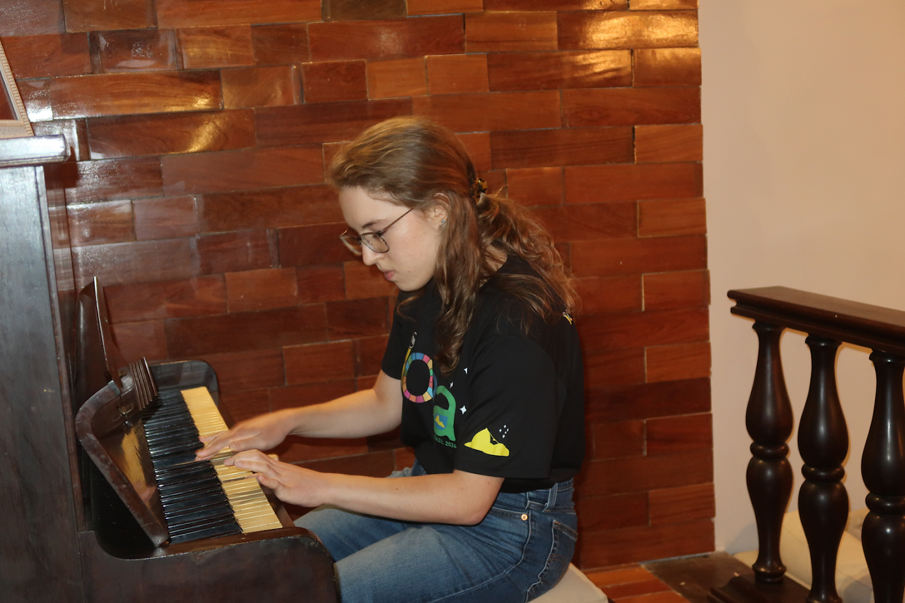

I'm Sofia Vasieva, a composer from north-west England. At other times, I'm an astrophysics student, and in between those two things, I enjoy long walks in nature. I frequently see parallels between the music in my mind and the various features and landscapes which surround me — and that's how things like rain, sun, clouds and the like become, in turn, a metaphor for the emotions that I aim to convey through my music.
Over the years, creating music has provided me with a means of expressing my thoughts and emotions. These musical pursuits are paralleled by a passion for physics, and for a number of years I struggled to decide between them. Luckily, I eventually figured out that I don't have to. For me, music and physics are inseparable, intertwined and dependent upon one another. Studying physics provides me with deeper mental content to express in my music, while the music I hear and create is the backdrop upon which I experience all else, including physics.
My first album, Sky, contains nine solo piano tracks, which I composed between the ages of 13 and 18, and later recorded, produced and mastered by myself. I'm very excited to announce the new Special Edition of Sky, which contains the original nine tracks, remixed and remastered, along with an epilogue of two bonus tracks.
Finally, I'm so grateful that you have come across my music and my website, and I hope that you stay to listen.